3.6. Thực nghiệm và đánh giá mô hình FinIntelBảng 3.6.1a. Cấu hình thực nghiệm và dữ liệu đầu vào
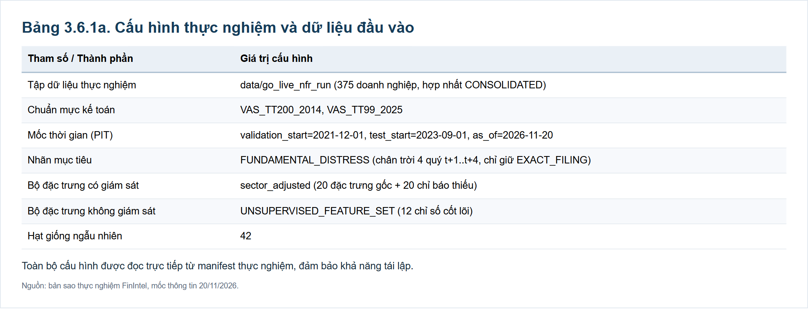
Toàn bộ cấu hình được đọc trực tiếp từ manifest thực nghiệm, đảm bảo khả năng tái lập.
Bảng 3.6.1b. Quy mô tập Train, Validation và Test (PIT và mẫu đánh giá khởi phát)
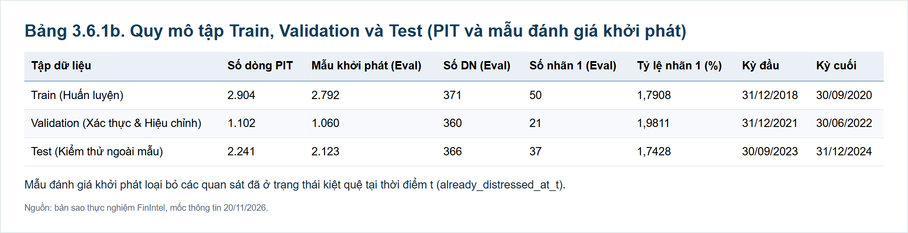
Mẫu đánh giá khởi phát loại bỏ các quan sát đã ở trạng thái kiệt quệ tại thời điểm t (already_distressed_at_t).
Bảng 3.6.1c. Cấu hình mô hình đề xuất và các mô hình đối chứng
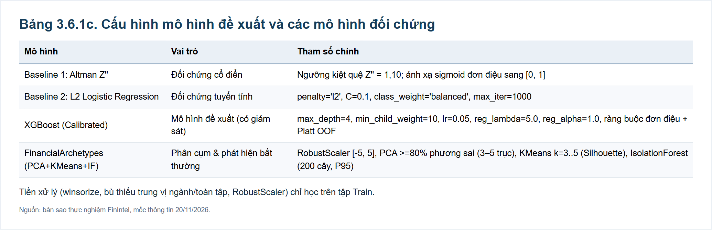
Tiền xử lý (winsorize, bù thiếu trung vị ngành/toàn tập, RobustScaler) chỉ học trên tập Train.
Bảng 3.6.2a. Hệ thống chỉ số đánh giá và giao thức kiểm chứng
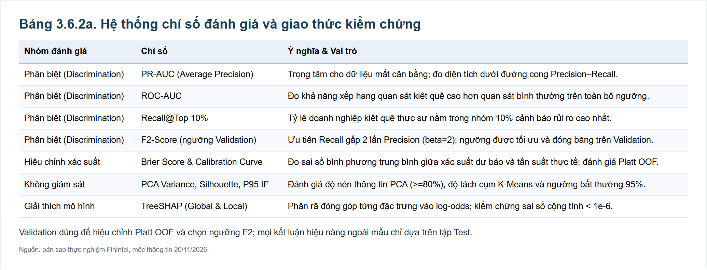
Validation dùng để hiệu chỉnh Platt OOF và chọn ngưỡng F2; mọi kết luận hiệu năng ngoài mẫu chỉ dựa trên tập Test.
Hình 3.6.3a. Phương sai giải thích của PCA trên tập Train (12 chỉ số)
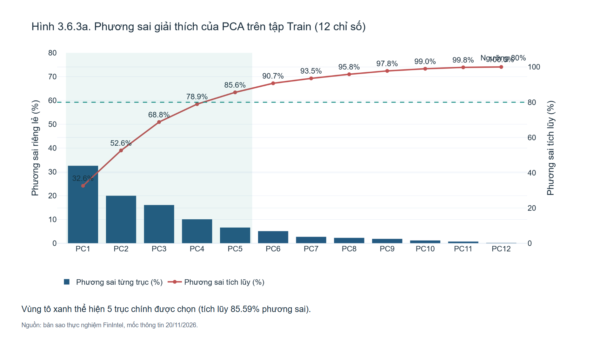
Vùng tô xanh thể hiện 5 trục chính được chọn (tích lũy 85.59% phương sai).
Hình 3.6.3b. Lựa chọn số cụm K-Means theo chỉ số Silhouette (Train)
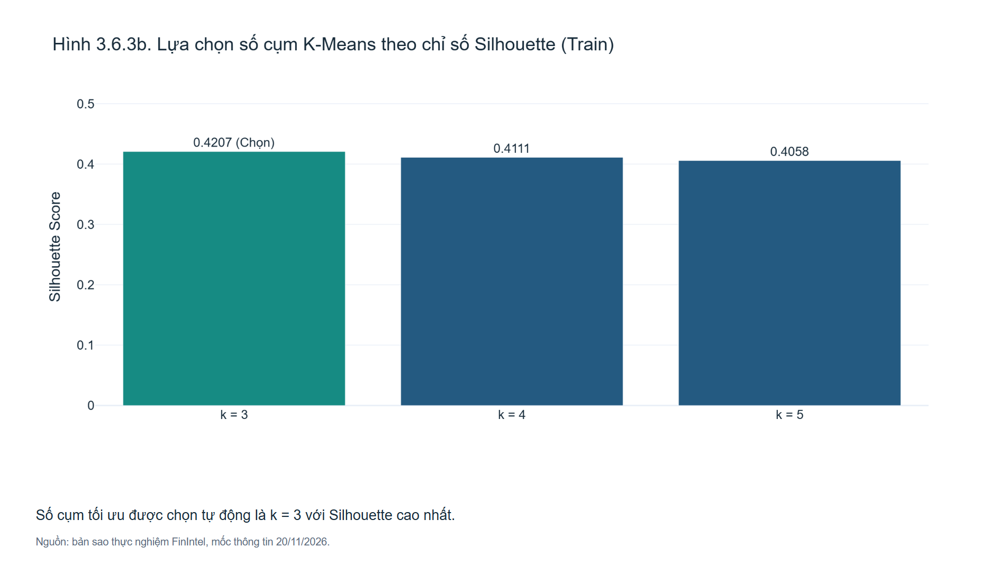
Số cụm tối ưu được chọn tự động là k = 3 với Silhouette cao nhất.
Bảng 3.6.3a. Phân bố cụm hình thái tài chính và tỷ lệ kiệt quệ theo tập
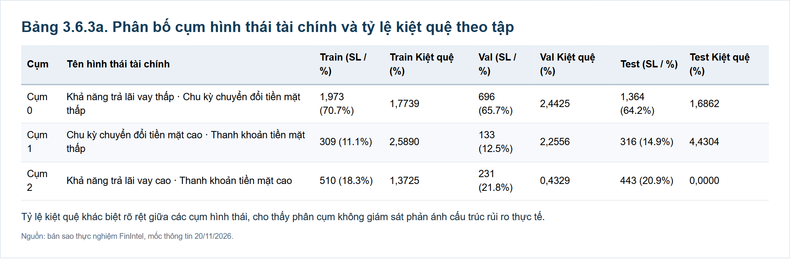
Tỷ lệ kiệt quệ khác biệt rõ rệt giữa các cụm hình thái, cho thấy phân cụm không giám sát phản ánh cấu trúc rủi ro thực tế.
Hình 3.6.3c. Không gian PCA (PC1–PC2) phân cụm K-Means và điểm bất thường (Test)
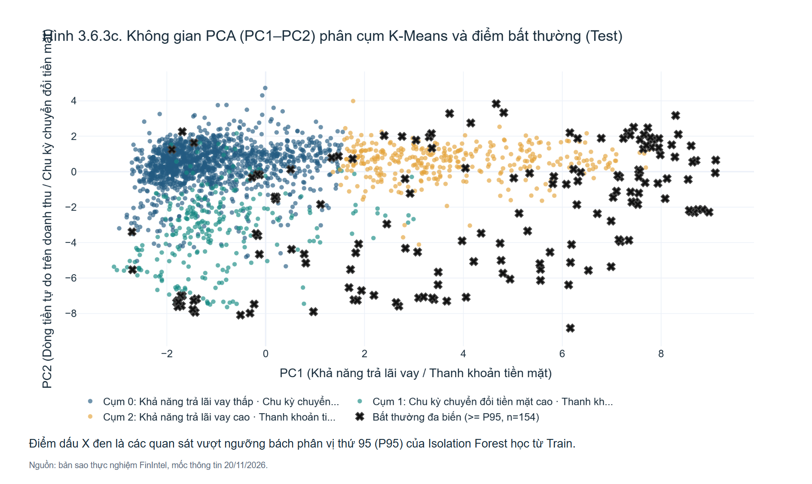
Điểm dấu X đen là các quan sát vượt ngưỡng bách phân vị thứ 95 (P95) của Isolation Forest học từ Train.
Hình 3.6.3d. Phân phối điểm bất thường Isolation Forest trên Train, Validation và Test
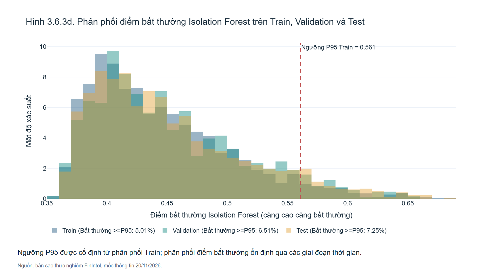
Ngưỡng P95 được cố định từ phân phối Train; phân phối điểm bất thường ổn định qua các giai đoạn thời gian.
Bảng 3.6.4a. Kết quả mô hình trên Train, Validation và Test (OOS)
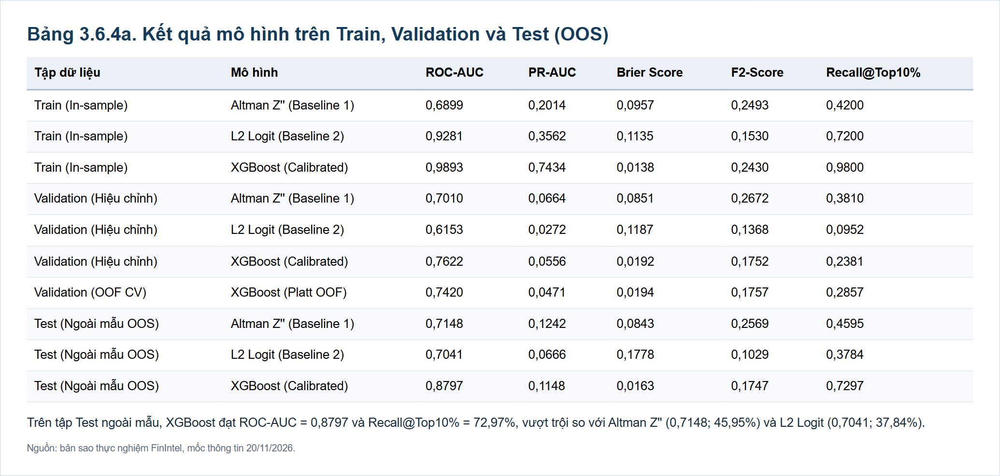
Trên tập Test ngoài mẫu, XGBoost đạt ROC-AUC = 0,8797 và Recall@Top10% = 72,97%, vượt trội so với Altman Z'' (0,7148; 45,95%) và L2 Logit (0,7041; 37,84%).
Bảng 3.6.4b. Kết quả chi tiết theo từng năm tài chính trên Validation và Test
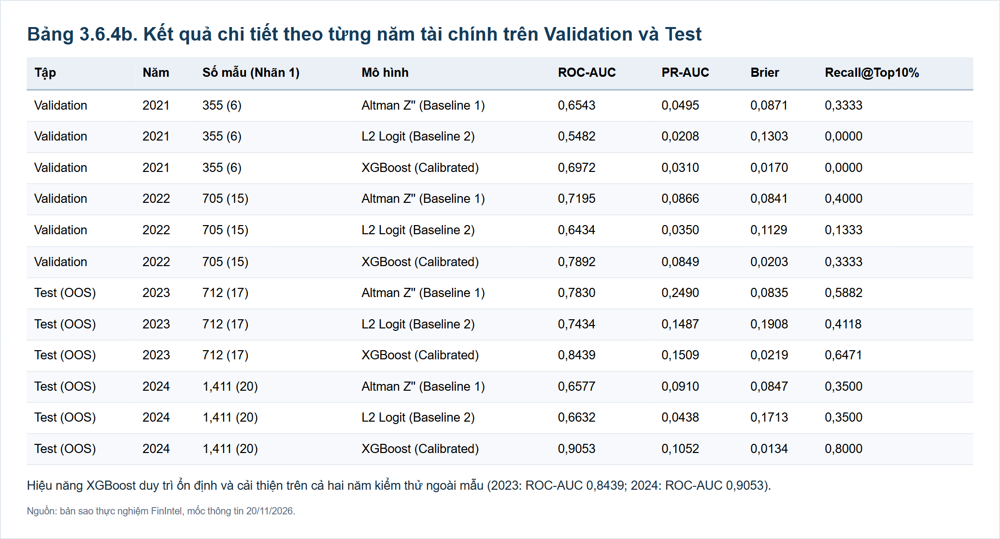
Hiệu năng XGBoost duy trì ổn định và cải thiện trên cả hai năm kiểm thử ngoài mẫu (2023: ROC-AUC 0,8439; 2024: ROC-AUC 0,9053).
Hình 3.6.4a. Đường cong ROC trên Train, Validation và Test (OOS)
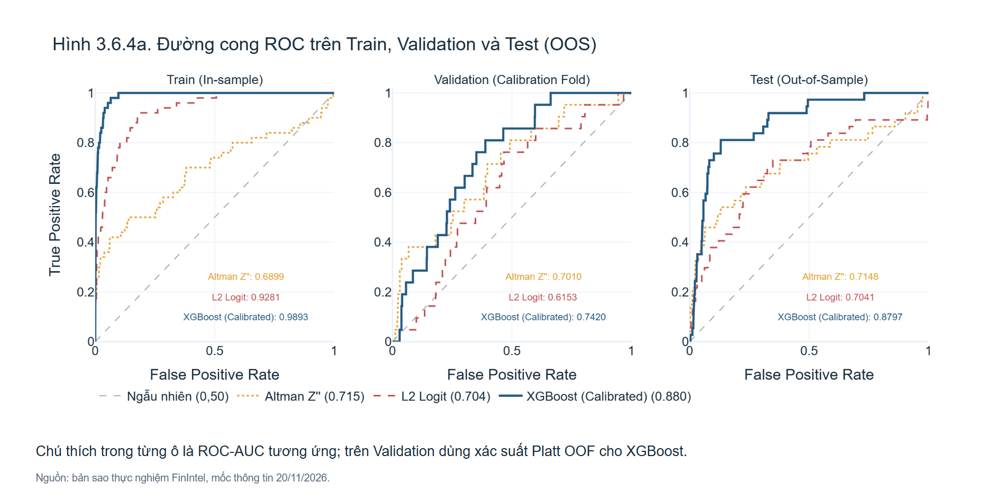
Chú thích trong từng ô là ROC-AUC tương ứng; trên Validation dùng xác suất Platt OOF cho XGBoost.
Hình 3.6.4b. Đường cong Precision–Recall trên Train, Validation và Test (OOS)
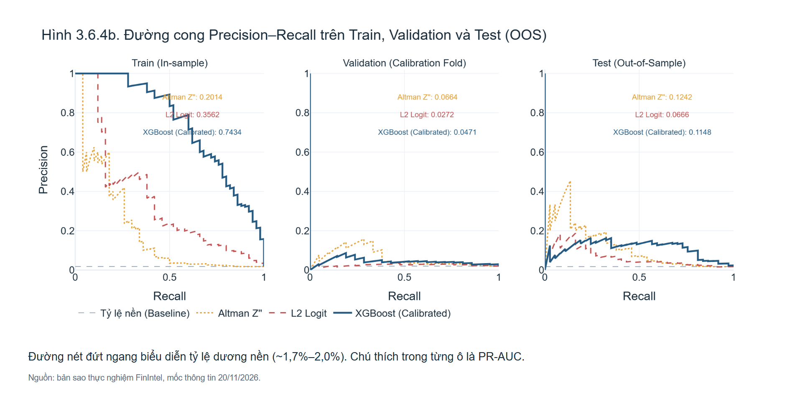
Đường nét đứt ngang biểu diễn tỷ lệ dương nền (~1,7%–2,0%). Chú thích trong từng ô là PR-AUC.
Hình 3.6.4c. Biểu đồ hiệu chỉnh xác suất (Reliability Diagram) trên Validation và Test
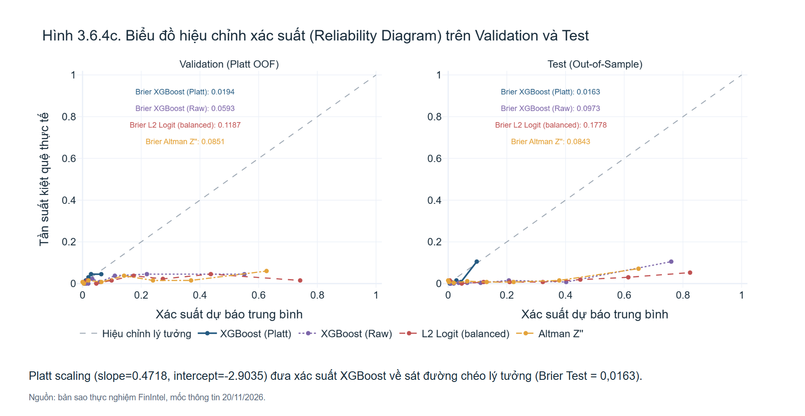
Platt scaling (slope=0.4718, intercept=-2.9035) đưa xác suất XGBoost về sát đường chéo lý tưởng (Brier Test = 0,0163).
Hình 3.6.4d. Phân bố tỷ lệ phát hiện ca kiệt quệ theo 10 phân vị rủi ro (Test OOS)
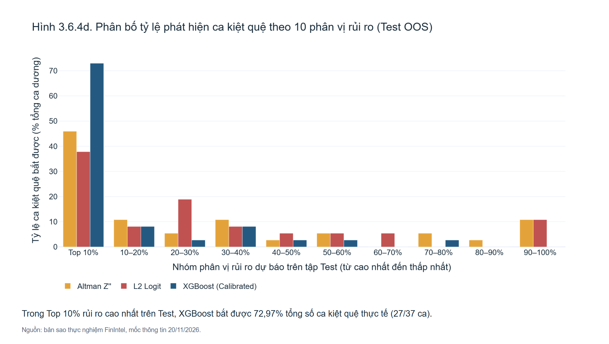
Trong Top 10% rủi ro cao nhất trên Test, XGBoost bắt được 72,97% tổng số ca kiệt quệ thực tế (27/37 ca).
Bảng 3.6.5a. Kiểm chứng tính cộng tính TreeSHAP trên Train, Validation và Test
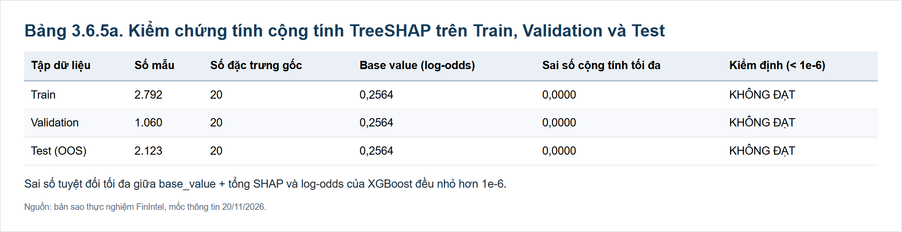
Sai số tuyệt đối tối đa giữa base_value + tổng SHAP và log-odds của XGBoost đều nhỏ hơn 1e-6.
Hình 3.6.5a. Tầm quan trọng toàn cục của Top 15 đặc trưng theo SHAP (Test OOS)
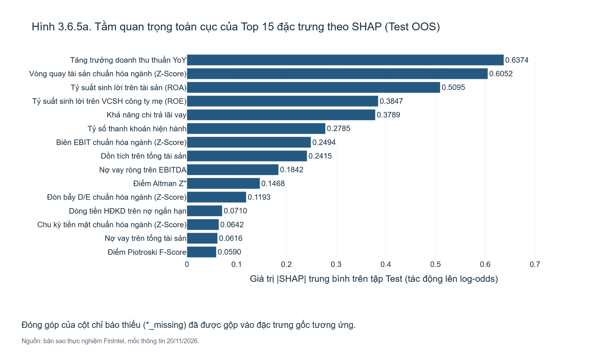
Đóng góp của cột chỉ báo thiếu (*_missing) đã được gộp vào đặc trưng gốc tương ứng.
Hình 3.6.5b. Biểu đồ phân bố tác động SHAP (Beeswarm) của Top 12 đặc trưng (Test OOS)
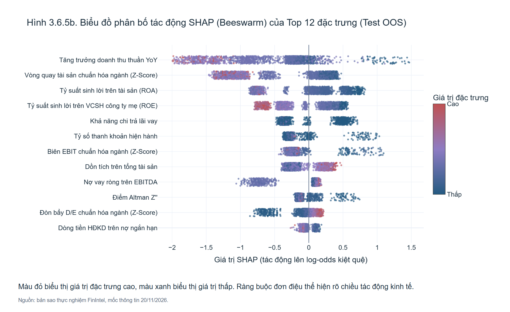
Màu đỏ biểu thị giá trị đặc trưng cao, màu xanh biểu thị giá trị thấp. Ràng buộc đơn điệu thể hiện rõ chiều tác động kinh tế.
Hình 3.6.5c. Giải thích cục bộ (SHAP Waterfall): CIG — kỳ 31/12/2023 (P = 19.82%)
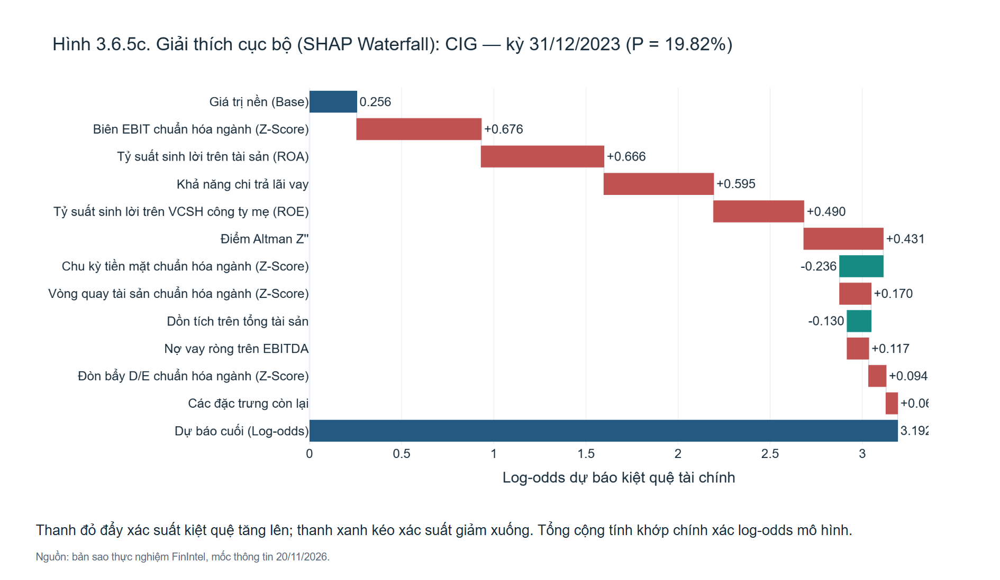
Thanh đỏ đẩy xác suất kiệt quệ tăng lên; thanh xanh kéo xác suất giảm xuống. Tổng cộng tính khớp chính xác log-odds mô hình.
Bảng 3.6.6a. Ma trận nhầm lẫn và đánh đổi sai số trên Test (ngưỡng F2 đóng băng)
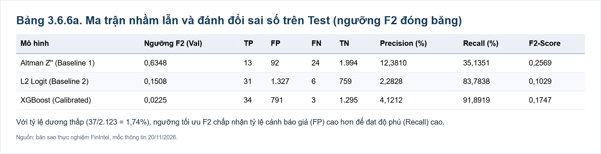
Với tỷ lệ dương thấp (37/2.123 = 1,74%), ngưỡng tối ưu F2 chấp nhận tỷ lệ cảnh báo giả (FP) cao hơn để đạt độ phủ (Recall) cao.
Hình 3.6.6a. Độ nhạy Recall, Precision và F2-Score theo ngưỡng vận hành (Test OOS)
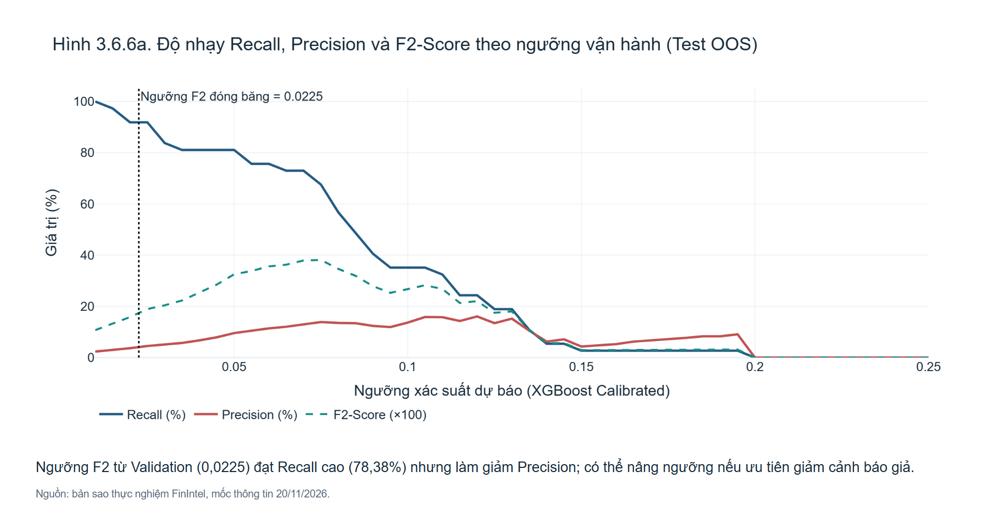
Ngưỡng F2 từ Validation (0,0225) đạt Recall cao (78,38%) nhưng làm giảm Precision; có thể nâng ngưỡng nếu ưu tiên giảm cảnh báo giả.